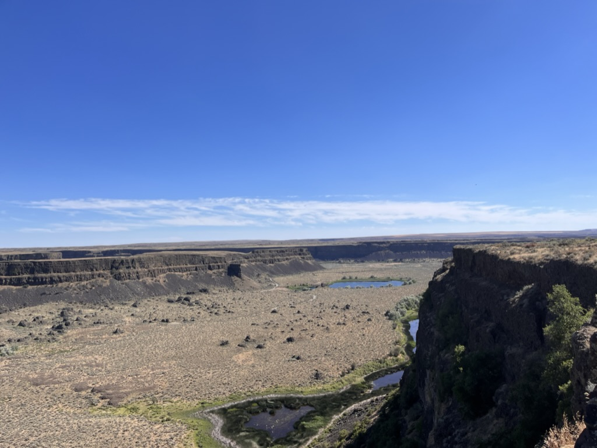

My professional and personal experiences are varied. I've tried my hand in many different fields. Through much exploration and trial and error, I have landed on a career in IT. I am drawn to the mixture of working with tech, problem solving, and just fixing things. I know the work will be intellectually stimliating and challenging, and I know that there will be opportunities for growth. I have spent much of 2023 studying IT, and it has been rewarding. I will be attending Western Governors University, and my goal is to complete a Bachelor's in IT by next summer.